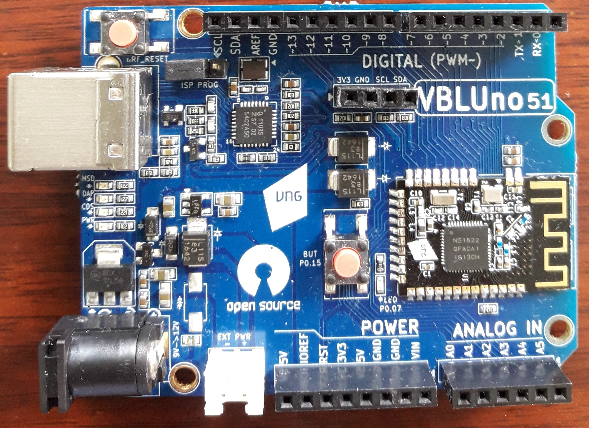
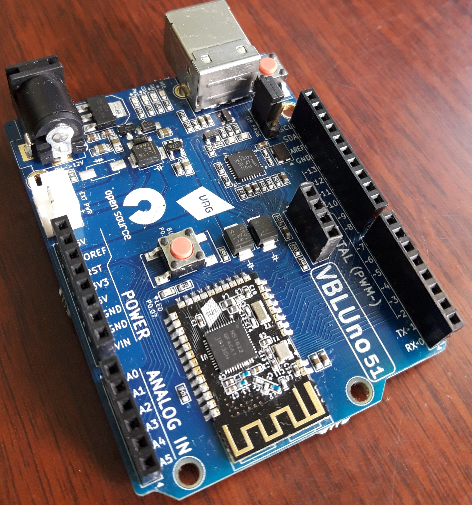

Giới thiệu
-
VBLUno51 (VNG Bluetooth Low Energe UNO nRF51822) là bo mạch phát triển ứng dụng Bluetooth Low Energy (BLE), được thiết kế mở rộng theo pinout tương thích chuẩn Arduino Uno. VBLUno51 được tạo ra với mục đích giúp cho các lập trình viên dễ dàng tiếp cận công nghệ BLE và nguồn tài nguyên vô tận của Arduino, mbed-OS và các frameworks khác cho việc phát triển các sản phẩm ứng dụng trong Internet of Things (IoT).
-
VBLUno51 hoàn toàn tương thích với Nordic Software Development Kit (SDK) và nhiều hệ điều hành nhúng phù hợp cho ứng dụng IoT như: mbed-OS, Apache Mynewt-OS, RIOT-OS, Zephyr,…
-
Điểm nhấn của bo mạch VBLUno51 là mô đun BLE được các kỹ sư của VNGIoTLab tự nghiên cứu và thiết kế. Đây cũng là mô đun đã và đang được sử dụng trong nhiều sản phẩm thương mại của công ty VNG như CSM Router, IoT Gateway,…. Mô đun BLE sử dụng chip nRF51822 của hãng Nordic Semiconductor, với nhân ARM Cortex-M0 32bit hỗ trợ chuẩn giao tiếp Bluetooth Smart (BLE). Bên cạnh các chuẩn truyền thông như 6LoWPAN, Zigbee, …, BLE được xem là chuẩn truyền thông cực kỳ phù hợp dành cho IoT, với các ứng dụng truyền thông khoảng cách gần và đặc biệt là độ tiêu thụ năng lượng cực kỳ thấp, thân thiện với môi trường sống. Ví dụ như các hệ thống tòa nhà thông minh, vườn thông minh, cửa hàng thông minh, quản lý trẻ em, …
-
Với tinh thần chia sẻ và mong muốn cộng đồng IoT Việt Nam có thể tiếp cận công nghệ BLE một cách dễ dàng nhất, VBLUno51 được công bố dưới dạng mã nguồn mở, từ sơ đồ phần cứng, các mã nguồn chương trình ví dụ, mã nguồn bootloader, mã nguồn công cụ upload, tài liệu hướng dẫn… Các bạn có thể dễ dàng tham khảo cũng như tùy biến.
-
Thông qua việc sử dụng bo mạch VBLUno51 kết hợp với Arduino IDE hoặc mbed-OS, các bạn có thể dễ dàng tiếp cận và xây dựng các ứng dụng IoT với công nghệ BLE, tiến tới làm chủ việc thiết kế các thiết bị đầu cuối trong hệ thống IoT.
Hình ảnh thực tế của VBLUno51




Tính năng
- CPU:
- Nordic nRF51822: ARM® Cortex™ M0 32bit.
- Truyền thông tiết kiệm năng lượng Bluetooth Low Energy.
- 256KB Flash, 32KB Ram.
- UART(1), I2C(2), SPI(1), PWM(3), SWD, Timer 16bit(3).
- 21 kênh vào ra số, 6 kênh ADC 10bit.
- Tích hợp sẵn 1 led và 1 nút nhấn trên mạch.
- Điện áp GPIO: 0 – 3.3V.
- Giao diện DAPLink cho phép nạp và gỡ rối chương trình dễ dàng.
- USB MSD: Nạp firmware bằng cách kéo thả.
- USB HID: Gỡ lỗi chương trình theo chuẩn CMSIS-DAP.
- USB CDC: Cổng COM ảo. Hỗ trợ hardware flowcontrol đảm bảo tính toàn vẹn dữ liệu truyền (RTS/CTS).
- Giám sát năng lượng của mô đun BLE với tiện ích đo dòng (Chỉ có trên VBLUno51_EM).
- Hỗ trợ FOTA: Nâng cấp firmware gián tiếp thông qua BLE.
- Xây dựng các ứng dụng nhanh chóng, mạnh mẽ với:
- Trình biên dịch & IDE: GCC, Keil MDK, IAR, Eclipse, Qt Creator.
- Frameworks: Arduino, ARM mbed-OS, Nordic SDK, RIOT-OS, Apache MyNewt-OS,…
- Nhiều tutorials cho Arduino, mbed-os, …
- Tương thích pinout của Arduino Uno Rev.3.
- 4 cách cấp nguồn:
- Cổng USB.
- Power adapter: +9 -> +12V.
- Pin kẹp 3V: đế pin CR20xx.
- Jump nối pin: +3.7 -> +12V
- Mã nguồn mở: Thiết kế phần cứng, firmware, phần mềm hỗ trợ, ví dụ mẫu.
Thông số chi tiết
| STT | Tính năng | Mô tả |
|---|---|---|
| 1 | CPU | Nordic nRF51822, nhân ARM Cortex-M0 32-bit |
| 2 | Truyền thông không dây 2.4GHz | Hỗ trợ giao tiếp Bluetooth Low Energy hay còn gọi là Bluetooth Smart: |
| +4dBm to -20dBm output power in 4dBm steps | ||
| -30dBm output power in whisper mode | ||
| -96dBm RX sensitivity at 250kbs | ||
| -90dBm RX sensitivity at 1Mbps | ||
| -85dBm RX sensitivity at 2Mbps | ||
| 2 Mbps, 1 Mbps and 250kbs supported data rates | ||
| Excellent co-existence performance | ||
| 3 | Xung nhịp hệ thống | 16MHz |
| 4 | Tiêu thụ năng lượng thấp | Ultra low power consumption |
| 6.3mA - TX at -4dBm (3V using on-chip DC-DC) | ||
| 8.0mA - TX at 0dBm (3V using on-chip DC-DC) | ||
| 11.8mA – TX at +4dBm (3V using on-chip DC-DC) | ||
| 9.7mA – RX (3V using on-chip DC-DC) | ||
| 13mA – RX at 1Mbps (No DC-DC) | ||
| 10.5mA – TX at 0dBm (No DC-DC) | ||
| 0.6µA – SYSTEM-OFF, no RAM retention | ||
| 1.2µA - SYSTEM-OFF, 8KB RAM retention | ||
| 2.6µA - SYSTEM-ON, All peripherals in idle mode | ||
| 5 | Digital I/O | 21 kênh; Điện áp: 0 ÷ +3.3V |
| 6 | ADC | 6 kênh; Độ phân giải: 10bit; Điện áp hoạt động: 0 ÷ +3.3V |
| 7 | Timer | 3 bộ Timer 16bit với chế độ counter |
| 8 | UART | 01 bộ |
| 9 | SPI | 01 bộ |
| 10 | I2C | 02 bộ |
| 11 | PWM | Tối đa 3 kênh tại cùng thời điểm; |
| Chế độ 8bit, 16bit; | ||
| Cấu hình PWM trên các kênh GPIO. | ||
| 12 | Ngắt ngoài | Cấu hình trên các kênh GPIO. |
| 13 | Nạp chương trình | Nạp chương trình bằng cách kéo thả đơn giản. (Hỗ trợ tự động nạp khi sử dụng chức năng Upload trên Arduino IDE). |
| 14 | Debug | Hỗ trợ kênh debug tương thích CMSIS-DAP. Nó làm việc tốt trên Keil uVision, pyOCD, OpenOCD,… |
| 15 | Cổng COM ảo | USB to UART |
| Làm việc tốt với tốc độ 2400 đến 115200 và hơn thế nữa. | ||
| Hỗ trợ Hardware flow control (RTS/CTS). | ||
Hỗ trợ lệnh Send Break. |
||
| 16 | Nguồn cung cấp | +3.7V -> +12V. Có thể cấp nguồn cho mạch qua 4 cách khác nhau: Cổng USB, Jack nguồn, pin CR20xx, pin sạc. |
| 17 | Pinout | Thiết kế phù hợp pinout của Arduino Uno Rev3 |